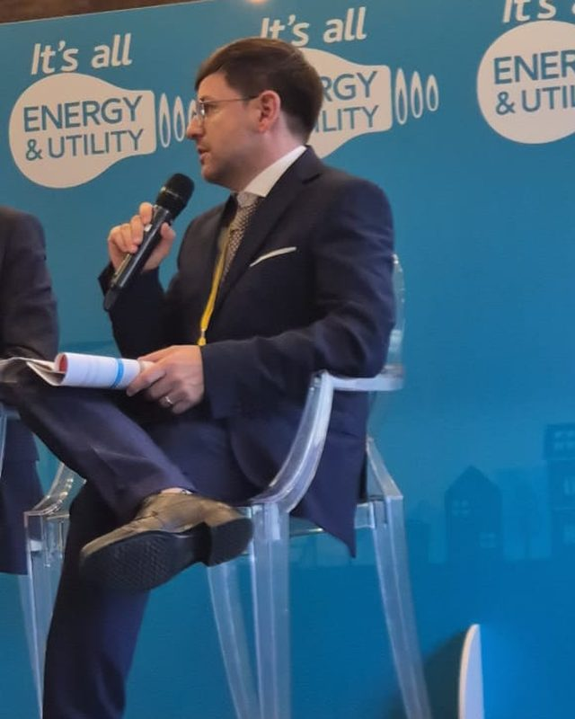
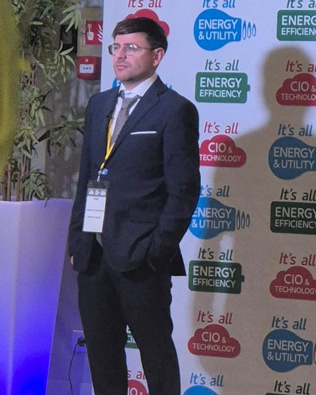
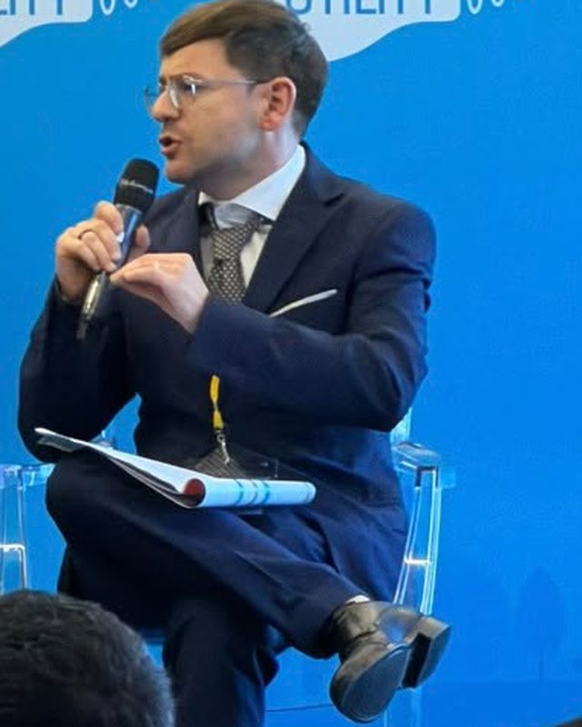

Dal customer care alla direzione finanziaria.
Nel 2020 sono entrato in Energia Comune rispondendo ai clienti al telefono. Tre anni e mezzo dopo ne sono diventato il CFO. Prima avevo fondato e guidato due imprese. Racconto l'energia con i numeri di chi deve far quadrare i conti.
In Energia Comune, un gradino alla volta
- Customer care e back officemag 2020Le richieste dei clienti al telefono, per email e in chat; contratti e dati.
- Deputy Head of Customer Service2021Report mensili, procedure dei reclami e il primo team. In parallelo, formazione e selezione del personale.
- Billing Managernov 2021 – nov 2023La fatturazione di luce e gas e il team che la gestisce.
- CFOdic 2023 – oggiDirezione amministrativa e finanziaria di Ecom S.p.A. – Energia Comune.
Ho conosciuto l'azienda da ogni lato: dal cliente che chiama per una bolletta che non capisce, alle persone da formare e da scegliere, fino ai numeri che arrivano in consiglio. Per questo, quando guardo un bilancio, vedo anche i processi e le persone che lo producono.
Cosa ho gestito da CFO
Gestione economico-finanziaria con punte di 9 M€ al mese, dalla pianificazione al reporting alla proprietà.
Gestione dei crediti d'imposta e supervisione della compliance fiscale e societaria.
Valutazione di minibond e prestiti bullet; aumenti di capitale da 100 mila a 1 milione di euro.
Conduzione di acquisizioni e fusioni; business plan e piani industriali a 5 anni.
Di cosa mi occupo oggi
Sono il CFO di Ecom S.p.A., la società che con il marchio Energia Comune vende luce e gas a famiglie e imprese. Rispondono a me le funzioni che tengono in ordine i conti e i rapporti con clienti, fornitori e banche, con un team che arriva fino a 30 persone. Lavoro in Puglia.
- Pianificazione e controllobudget, forecast, analisi degli scostamenti
- Tesoreria e bancheflussi di cassa e rapporti con gli istituti di credito
- Amministrazione e contabilitàcontabilità generale, bilancio, reporting
- Taxcompliance fiscale e crediti d'imposta
- Fatturazioneil ciclo di billing di luce e gas
- Recupero creditiincassi e gestione degli insoluti
- Acquisti e procurementapprovvigionamento, fornitori e contratti
- Segreteriasegreteria societaria e di direzione
Prima di Energia Comune
- 2014 – 2020Titolare, Domuel S.n.c.Impresa nelle telecomunicazioni fondata con un socio: business plan finanziato da BPER Banca con garanzia Cofidi, accordi con Vodafone, Tiscali e Fastweb, una rete di partner locali per l'assistenza.
- 2012 – 2018Titolare, No Limit 24HBusiness plan approvato e finanziato dalla banca; controllo finanziario e di gestione che ha permesso di ripianare oltre 60.000 € di debiti.
- 2009 – 2010Disegnatore tecnico CADStudio di ingegneria a Santeramo in Colle: il primo lavoro.
Interventi
Ultimo intervento · 13 ottobre 2026, Milano
It's all Energy & Utility
Relatore, come direttore finanziario di Energia Comune, alla tavola rotonda "Finance e Sistemi di Pagamento per Energy & Utility", insieme ai responsabili di finanza, tesoreria e incassi di Dolomiti Energia, Magis Energia e Gas Plus. Al centro: pagamenti digitali, incassi e tutela dei margini quando i prezzi dell'energia sono volatili.



- giu 2026Financial Forum 2026Tavolo tematico "Treasury & Cash Flow"
- 27 mag 2026Assolombarda, MilanoTavolo tematico "Finance & Business Transformation", Comunicazione Italiana
- 14 nov 2025CFO: Finance and Digital Talks, MilanoSpeaker · "Il CFO e il Cambiamento Digitale", Enterprise Hotel
- 3 apr 2025Cybersecurity e Finanza d'Impresa, MilanoIl ruolo del CFO nella protezione dei dati
Formazione, certificazioni e strumenti
Di cosa scrivo
- Energia
- PUN e mercato elettrico, gas, bollette, reti e rinnovabili
- Finanza
- Cassa e capitale circolante, banche e M&A, fisco, finanza pubblica
- Valori
- Leadership, merito, responsabilità, lavoro
- Attualità
- Puglia, geopolitica, società